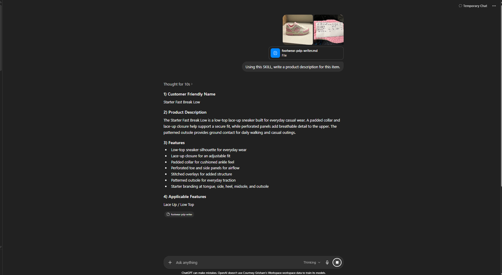
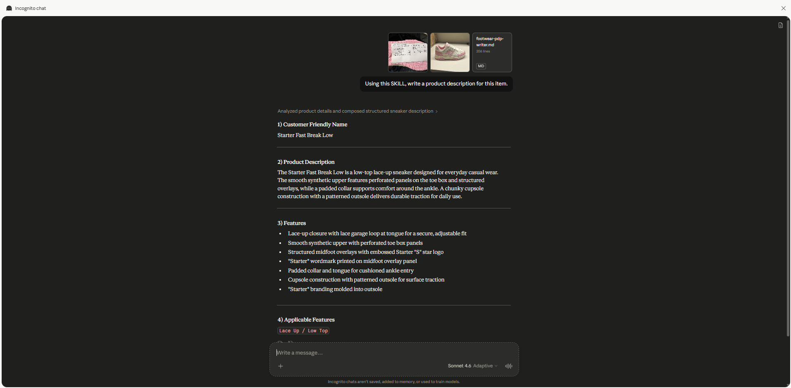

Same AI tools. Completely different outputs. No way to catch errors before go-live.
Writers across Shoe Carnival and Shoe Station were using AI with no shared rules. Every output looked different. Tone varied by writer, format varied by session, and there was no systematic way to catch inaccurate product claims before a listing went live.
The result was inconsistency at scale. Turnaround on a full seasonal batch ran 15+ days. Quality checks happened after the fact, if at all. When a writer left, their approach left with them.
The system needed rules that were independent of who was running it — and model-agnostic enough to survive the next AI upgrade.
A structured governance layer that any model reads and follows
The core of the system is a SKILL.md file: a structured Markdown document that encodes every rule a writer needs to follow — voice, format, feature selection, prohibited phrases, applicable tags, and quality checks — as a machine-readable instruction set. The model reads it on every run. Output is consistent regardless of batch size, product category, or which AI is doing the work.
Same product. Same photos. No governance vs. with governance.
The comparison below shows the same product run through ChatGPT without governance, ChatGPT with the SKILL.md applied, and Claude with the SKILL.md applied. The governed outputs are structurally identical regardless of which model produced them.




6,704 SKUs. Under a day of turnaround. Two brands, one system.
Built for operators, not just writers
Supervisors, the creative director, marketing manager, buyer assistants, and the photography team all operate inside this system without needing to understand how it works technically. The governance layer is invisible to the user — it just makes the output right.
The system was built to survive personnel changes. When a new writer joins, they get the SKILL.md. They do not need to learn a style guide from memory or shadow a senior writer for weeks. The rules are in the document, and the document runs every time.